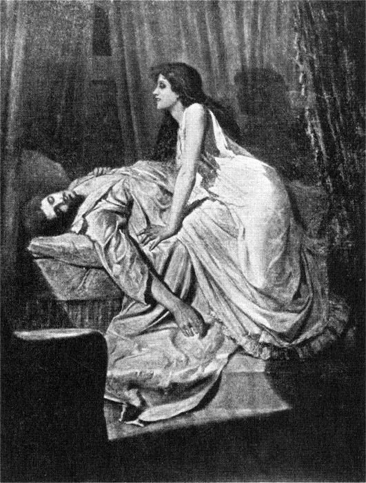

The Monster of Slavic
Via Wikipedia — "Vampire"; image license per its Wikimedia Commons file page
You've been sick for three weeks. The doctors don't know what's wrong.
You've been sick for three weeks. The doctors don't know what's wrong. Every morning you wake up weaker, paler, with two small wounds on your neck that you can't explain. Last night you dreamed of a face at your window — beautiful, hungry, with eyes that caught the moonlight like a cat's. When you woke, your bedroom window was open. It was locked. You locked it yourself. And on your pillow, a single pressed rose, black with age. Something is courting you. And you are dying of it.
The Vampire is one of the most complex and culturally pervasive monsters in human folklore, with roots stretching back thousands of years across multiple civilizations. The modern vampire — the pale, seductive aristocrat who drinks blood, shuns sunlight, and can be killed with a wooden stake — is a relatively recent synthesis, but vampire-like beings appear in nearly every culture: the Greek vrykolakas, the Hebrew estries, the Romanian strigoi, the Indian vetala, the Chinese jiangshi, the Malaysian penanggalan. At its core, the vampire is a creature that should be dead but isn't — an undead predator that sustains its unnatural existence by feeding on the life force of the living, typically their blood.
The vampire's horror is not merely physical. It is the predator that wears a loved one's face — a family member who died and then returned, not as a ghost but as something that knocks on the door at night and asks to be let in. The vampire is disease made manifest, the wasting illness that drained entire villages before germ theory could explain it. It is the fear of the dead not staying dead, of the grave not being final, of the beloved dead coming back wrong. And in its more romantic incarnations — from Bram Stoker's Dracula to Anne Rice's Lestat — the vampire is also a tragic figure, cursed with immortality, forced to prey on those it might love, eternally alone in a world that moves on without it.
“You've been sick for three weeks.”
Vampire beliefs appear independently across cultures, but the European vampire tradition crystallized in Slavic and Balkan folklore. The word 'vampire' comes from the Serbian 'vampir.' The creature was originally not a seductive aristocrat but a bloated, ruddy-faced corpse that rose from its grave to drain the life of its family and livestock. The 18th-century 'Vampire Epidemic' in Eastern Europe — documented by Austrian military doctors who witnessed exhumations of suspected vampires — spread the concept to Western Europe. John Polidori's 1819 story 'The Vampyre' introduced the aristocratic, seductive vampire (based on Lord Byron), and Bram Stoker's 'Dracula' (1897) codified the modern vampire: charismatic, immortal, weakened by sunlight and holy symbols, and destroyed by a stake through the heart. Stoker synthesized Eastern European folklore, Gothic literature, and Victorian anxieties into one of the most influential novels ever written.
The traditional Eastern European vampire was not pale and beautiful but bloated and ruddy — a corpse that looked healthier than it did in life because it was engorged with stolen blood. Its skin was dark, its hair and nails continued to grow (actually the skin receding after death), and it was found lying in its grave with blood on its lips. The modern vampire, codified by Stoker and romanticized by later writers, is pale, aristocratic, and unnaturally beautiful, with sharp features, hypnotic eyes, and elongated canine teeth. It casts no reflection, has no shadow, and in some accounts cannot be photographed. It may be capable of transforming into a bat, wolf, mist, or other forms. Its breath smells of blood and old tombs.
Immortality — vampires do not age and can only be killed by specific methods. Superhuman strength, speed, and senses. Mesmerism or hypnotic control over victims, particularly those they have fed upon. Transformation into bats, wolves, mist, or other creatures (Dracula alone transforms into a bat, wolf, dog, and mist). Wall-crawling and levitation. The ability to create new vampires by feeding a victim their own blood. Control over certain animals (wolves, rats, bats). In some traditions, they can command the weather. They do not breathe, have no heartbeat, and cannot be killed by conventional means (swords, bullets). Some vampires possess telepathy or precognition.
Vampires are predators, but they are also tragically human in their emotions. They form attachments, fall in love, and grieve — but their hunger always comes first. Early folkloric vampires were mindless, reanimated corpses driven purely by hunger. The literary vampire is intelligent, calculating, and often tormented by its condition. It must feed, and it prefers to feed on those it finds beautiful or significant. It collects brides, servants, and thralls — humans bound to it through blood. It is territorial and aristocratic, viewing humans as both food and company. It is deeply vulnerable to certain emotional states — loneliness, obsession, the desperate desire to be loved — and these vulnerabilities make it more human, and therefore more terrifying.
The vampire's weaknesses are almost as famous as its powers: sunlight (fatal in most modern versions, merely weakening in early folklore), a wooden stake through the heart (traditionally hawthorn or ash), decapitation, fire, holy water, crucifixes, garlic, and silver. The vampire cannot enter a home without being invited, though once invited it may return freely. It must rest in its native soil (Dracula carries Transylvanian earth with him to England). It cannot cross running water except at slack or flood tide, and cannot abide the scent of garlic or wild roses. It must feed regularly or weaken. In some traditions, it must return to its grave before dawn. Destroying the vampire's coffin or scattering the grave earth can weaken it. A vampire's true death, in many traditions, releases the souls it has taken, allowing them to pass on.
☘ The vampire panic of the 18th century saw actual exhumations of corpses that were staked, beheaded, and burned — all documented by Habsburg military authorities.
☘ Garlic's reputed power against vampires may derive from the same property that makes it antibacterial — it was used to preserve meat, and vampires ARE dead meat.
☘ The word 'nosferatu' (popularized by the 1922 silent film) may derive from the Greek 'nosophoros' meaning 'disease-bearing' — the vampire as plague.
☘ Bram Stoker's Dracula has never been out of print since its publication in 1897 — one of the few novels to achieve continuous 125+ year commercial success.
☘ Countess Elizabeth Báthory, the 'Blood Countess' who allegedly bathed in the blood of virgins, is sometimes cited as a real historical vampire — though the historical evidence is disputed.
You find a journal in your grandmother's attic, written in a language you don't recognize. You translate one l…
EuropeanWerewolfYou wake up naked in the woods. You don't remember how you got here. Your hands are covered in something dark …
Bram Stoker's novel 'Dracula' (1897), based on Eastern European vampire folklore and the historical Vlad III (Vlad the Impaler)DraculaCount Dracula is the titular antagonist of Bram Stoker's 1897 Gothic horror novel, and the character who singl…
CelticBansheeIt's three in the morning and you're the only one awake in the house. From somewhere outside — or maybe inside…
Beings of the same nature, imagined by other peoples.
This page is intentionally blank and ready for source-backed lore, versions, images, and connections.
Unclassified — research pendingShnitzelThis page is intentionally blank and ready for source-backed lore, versions, images, and connections.
Unclassified — research pendingAlceThis page is intentionally blank and ready for source-backed lore, versions, images, and connections.
Unclassified — research pendingGegants del Poble Sec d'IgualadaThis page is intentionally blank and ready for source-backed lore, versions, images, and connections.
The vampire is arguably the most successful monster in Western culture. It has been reinterpreted by every generation to embody its particular anxieties: Victorian fears of sexuality and foreign contamination (Dracula), Cold War fears of ideological conversion (Invasion of the Body Snatchers, which is vampire-adjacent), 1980s fears of AIDS (the blood-transmitted curse), and contemporary explorations of addiction, consent, and toxic relationships. The vampire is a mirror held up to humanity's relationship with death, desire, and power. It has spawned entire subcultures (Goth, vampire LARP communities), academic disciplines (vampire studies is a real field), and a publishing and film industry that has generated billions of dollars.
Modern vampires have evolved far beyond Stoker. Anne Rice's 'Vampire Chronicles' (1976 onwards) made them tragic, sensual antiheroes. 'Buffy the Vampire Slayer' (1997-2003) used vampires as metaphors for high school as literal hell and the monsters we date. Stephenie Meyer's 'Twilight' (2005) reimagined vampires as sparkly, abstinent boyfriends for the YA generation — profoundly controversial but massively influential. 'True Blood' explored vampire civil rights. 'What We Do in the Shadows' (film and TV series) turned vampire tropes into sublime comedy. 'Castlevania' (Netflix) returned to the Gothic horror roots with stunning animation. The vampire is now equally likely to be a love interest, a superhero ('Blade'), or a comedian — its flexibility is its greatest strength.
Strong sourcing with some gaps or single-tradition dependence. Primary attestation: Eastern European.
Countess Elizabeth Báthory, the 'Blood Countess' who allegedly bathed in the blood of virgins, is sometimes cited as a real historical vampire — though the historical evidence is disputed.
Continue the descent
You find a journal in your grandmother's attic, written in a language you don't recognize. You translate one l…
follows the threadSlavicChernobogChernobog — the Black God — is the most famous Slavic deity that we know almost nothing about. A single mediev…
same traditionUnclassified — research pendingHitotsume-kozōThis page is intentionally blank and ready for source-backed lore, versions, images, and connections.
same wing of the Archive